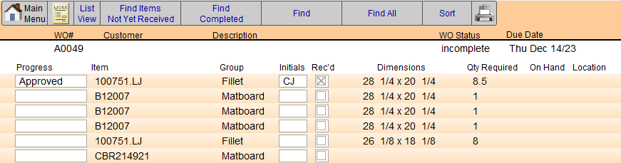
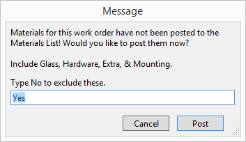
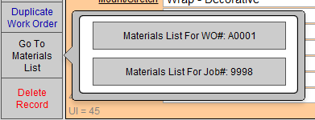
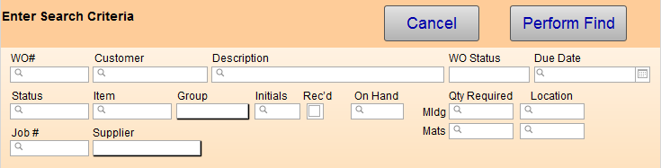

The Materials List Explained
If your shop protocol is not to start a job until all materials are in your shop, then use the Materials List to quickly see which components have arrived.
-
You can track materials for a specific Work Order so that you can know when all the materials have arrived (and work on the order can begin).
-
The Materials List is for one Work Order at a time or for all Work Orders with the same Job Number.
-
Creates a list of all the required framing materials required; may also be printed.
Material List and Purchase Orders
-
The Material List works in conjunction with Purchase Orders: When the same items on a Purchase Order are ‘received’ (by clicking on the Accept or Accept All buttons on the Purchase Order screen), then those items on the Material List are automatically also shown as received and display the initials of the receiver.
Important: marking an Item as received or entering initials on a Material List will not update the original Purchase Order. Make such changes from the Purchase Order instead.
-
Initials of the employee receiving must be entered before receiving any listed item.
Material List Screen Explained

Main Menu / Work Order Buttons
-
Click Main Menu or Work Order to exit.
List View Button
-
Quickly switch to a list view of the parent Work Orders.
Find Items Not Yet Received Button
-
Displays all framing materials have not been marked as received. The purpose of this would be to check which jobs can be started.
Find Completed Button
-
Displays all framing materials that have been added to the Materials List.
Find Button
-
Displays the Find screen.
-
See below: Using the Find Button
Find All Button
-
Displays all records.
Sort Button
-
Click the Sort button to sort items.
-
See also: How to Sort
Printer Icon
-
Use the Printer icon to print either list.
Progress Field
-
Choose the progress status for each line item, e.g. Approved, Proofed, Cut, etc.
-
To change the list, click Edit... at the bottom of the list.
Item Field
-
The individual material item.
Initials Field
-
Initials of the individual confirming the progress status.
Received Checkboxes
-
Received items can be checked and initialed by employees, or printed and to attached to the artwork in the back room. Note that these actions are separate from Purchase Order actions.
Qty Required, On Hand, Location Fields
-
As used throughout FrameReady.
Viewing a Materials List for a Work Order
-
On a Work Order, click the Go To Materials List sidebar button.
-
If the materials for that Work Order have not yet been posted, then a dialog box appears. To include Glass, Hardware, Extra and Mounting items, make sure Yes is in the field and then click Post.

The Materials List screen appears. -
If multiple Work Orders have been posted to the Materials List, then a popover appears with two buttons:

1) A button for the Materials List for the current Work Order.
2) A button for the Materials List for the current Job Number (all Work Orders belonging to that job).
You may be prompted to Post each individual Work Order.
Using the Find Button

© 2023 Adatasol, Inc.